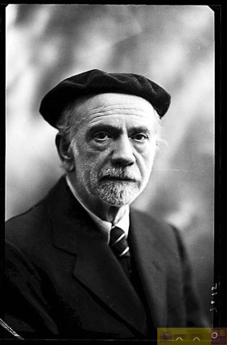

Aplica a la prosa los rasgos formales característicos del Modernismo,
es decir, la búsqueda de renovación de la técnica, la musicalidad, sensorialidad,
simbología y exotismo del lenguaje, frente a la acción narrativa, que suele ser
bastante pausada. Los principales representantes son Valle-lnclán y Juan Ramón Jiménez.
Valle-lnclán es autor de las Sonatas (1902-1904). Son cuatro novelas cortas, una por
cada estación del año, que suponen el punto culminante de la prosa modernista por su
musicalidad y por la creación de atmósferas sensuales, decadentes y melancólicas.
Narran, de forma autobiográfica, las aventuras amorosas del ficticio Marqués de Bradomín,
un don Juan "feo, católico y sentimental".
Platero y yo, de Juan Ramón Jiménez, es una novela lírica constituida por breves capítulos,
auténticos poemas en prosa. Narra la vida durante un año en Moguer, centrándose en los seres
que sufren (niños, animales) y en la Naturaleza.
novela del Grupo del 98
El Grupo del 98 (Unamuno, Baroja Azorín y Pío Baroja) surgió en el contexto del
regeneracionismo, un amplio movimiento finisecular que reclamaba cambios profundos
para España.
El 98 aportó a la novela española una nueva manera de novelar, frente al Realismo del
siglo XIX:
En el estilo, tienden a la sencillez, la sobriedad y la precisión del lenguaje, huyendo
de la frase amplia y recargada. Recuperan palabras tradicionales y arcaicas.
Su técnica narrativa en este género es muy peculiar y novedosa, ya que muchas veces el
argumento es poco importante y deja paso a multitud de reflexiones ensayísticas, aspecto
que no existía en la novela del Realismo.
Temas
Su temática se desarrolla en dos vertientes principales:
Reflexión sobre el ser humano: el sentido de la existencia, la creencia en Dios.
El tema de España. Parten de su preocupación por el presente de España (que miran con gran
pesimismo), y pasan a la reflexión sobre la esencia de España. Para ello intentan conocer
el pasado y el presente del país a través de viajes y lecturas. De ahí su interés por la
búsqueda de la intrahistoria, es decir, la historia real del pueblo llano. Especialmente
Unamuno y Azorín, tomaron a Castilla como centro de su reflexión sobre España, exaltando
su paisaje, sus pequeños pueblos, su espiritualidad, su tradición literaria...

Pio baroja
Pio Baroja
Nació en san sebastián. Estudió Medicina y llegó a ejercer de médico rural, pero abandonó la
profesión y se instaló en Madrid. Formó con Azorín y Maeztu el grupo de "Los Tres", germen
del grupo del 98. A partir de entonces se dedicó por entero a la literatura. Durante la
guerra civil permaneció en Francia por breve tiempo. Terminada la guerra llevó una vida
retirada en Madrid, hasta su muerte. Hombre de carácter difícil, su pesimismo sobre el ser
humano se manifiesta en todas sus obras.
Técnica y estilo. - Sus novelas se caracterizan por ser obras aparentemente sin planificación,
con abundantes episodios y personajes secundarios. Lo más importante para Baroja es que la novela
refleje la vida real, que es superior a la fantasía. El estilo es espontáneo y vivo.
Personajes. - Sus personajes suelen ser seres asociales y rebeldes, que reaccionan ante la vida
de dos formas diferentes: algunos son seres de acción, activos y enérgicos; otros son seres abúlicos
y pesimistas. Casi todos terminan su peripecia en fracaso.
Títulos principales:
-Memorias de un hombre de acción, de tema histórico.
-La trilogía La lucha por la vida (cuyo primer título es La busca), centrada en los barrios más miserables de Madrid.
-Zalacaín el aventurero, novela de aventuras de un contrabandista durante la guerra carlista.
-Las inquietudes de Shanti Andía, novela en la que el protagonista recuerda su vida relacionada con el mar.
-El árbol de la ciencia, que refleja la crisis del racionalismo a finales del siglo XIX.